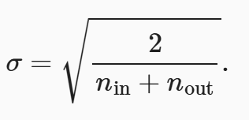

深度学习——基础（一）
基础
1 Tensor
tensor可以当作多维数组进行使用，用+，-，*，**等运算符可以对tensor里每个元素进行操作。
2 Pandas
对数据进行分析处理得 Python 模块。pd.read_csv获取到 csv 文件数据。可以转换成 tensor。
3 矩阵操作
对 Tensor 进行各种操作。
4 求导
先指定需要求导的变量，使用梯度。然后确定函数，利用反向传播，计算出梯度。计算图就是计算机进行求导运算时将函数分解成许多个子步骤，一步步计算。
5 线性回归
预测问题通常可以建模成线性回归y=w*x+b的模型。
5.1 训练
训练的目的是为了找到最合适的权重 w 和偏置 b。
- 读取数据
通常为了加速训练过程，分为多个 batch （每个 batch 有多个数据）进行读取，这样可以最大程度利用 GPU 多核计算的能力。 - 梯度计算
用回归模型计算出的预测值与真实值进行比较，常用误差的均方和（MSE）进行计算。 - 反向传播
通常使用 SGD 优化器进行参数优化，y=y-garma*lossgarma是学习率，因为梯度是朝着数值增加的方向，所以前面加上负号表示使数值减少的方向优化。
6 softmax回归
面对分类问题常使用 softmax 回归的方法。
- 对输出类别进行编码
- softmax预测
exp(x)/∑(exp(x))计算出各个类别的概率。 - 梯度计算
为了防止softmax函数上溢和下溢常使用的使交叉熵（CrossEntropy）损失-y*log(ŷ)的方法进行计算。
其他的步骤与线性回归模型类似。
7 多层感知机
单层线性难以拟合多维的数据，所以需要多层的感知机，并且隐藏层需要经过非线性函数，以防多个线性层造成维度塌陷。通常维度需要先扩张，以获得输入的更多特征信息，然后逐渐减少至输出维度。
8 欠拟合和过拟合
当数据较简单，模型复杂，模型就会被局部的数据特征影响，泛化（在测试集上测试）能力弱，训练误差小，泛化误差大，过拟合。当模型过于简单，难以拟合数据就会造成欠拟合。
为了选择出适中复杂度的模型，需要使用验证数据集进行验证，验证数据集可以是训练数据集的一部分，然后真正的训练数据集是训练数据集的令一部分。
8.1 K 则重复验证
将测试数据集分为 K 份，每一份依此作为验证数据集，然后训练数据集是剩下的 K - 1 份。进行 K 次验证后取平均损失，比较不同模型的好坏。
9 权重衰退
为了应对过拟合，常有两种方法，一是减小权重范围，二是减少权重数量。权重衰退使用正则化的方法在 loss 函数里增加一项权重，使权重不会过大。最后权重更新变成w = (1-ηλ)w-η∇(loss)权重参数前由 1 变成 (1-ηλ)。
10 丢弃法
为了应对过拟合的问题还可以使用丢弃法，在每次训练每一层以一定概率丢弃一定的神经元，可以模型拥有更好的适应性。
11 梯度爆炸和衰退
由于梯度计算时是多层梯度的乘积很容易造成梯度为接近 0 或者无穷大。为了防止这种现象，可以将每一层的输出与输入都有相同的均值与方差。为了实现该目标有两种方法，一是用特定的方法进行参数初始化像 Xavier 利用均值为 0，方差如下图的高斯分布。

二是激活函数的处理，需要保持激活函数y=x。对 relu 和 tanh 的泰勒展开都满足此条件，sigmoid 不满足，将其处理4 x sigmoid(x) - 2。